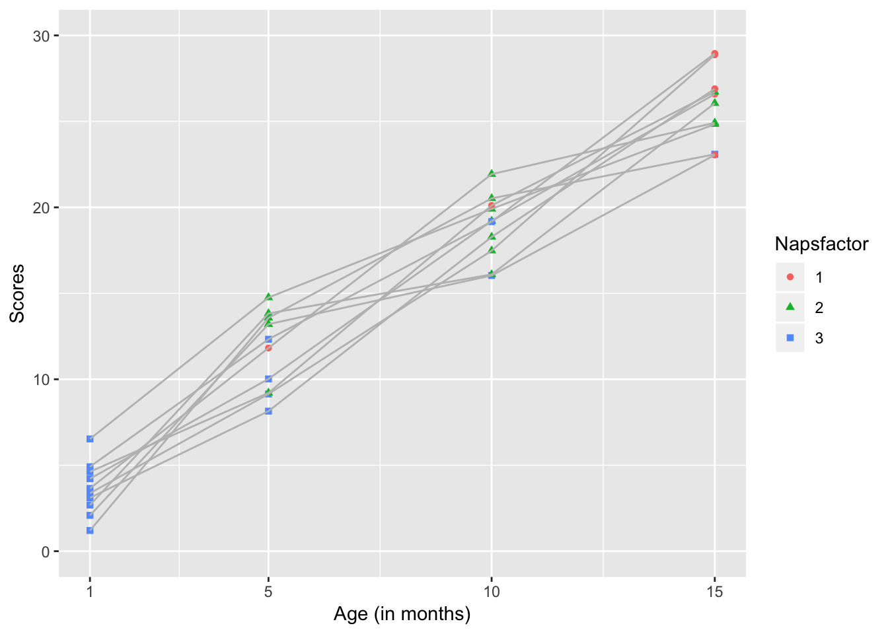
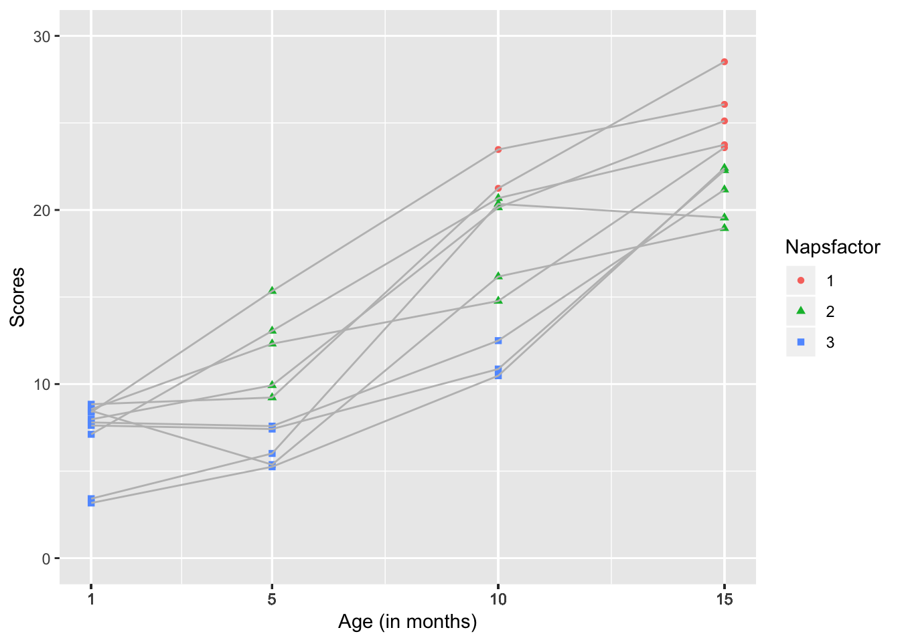
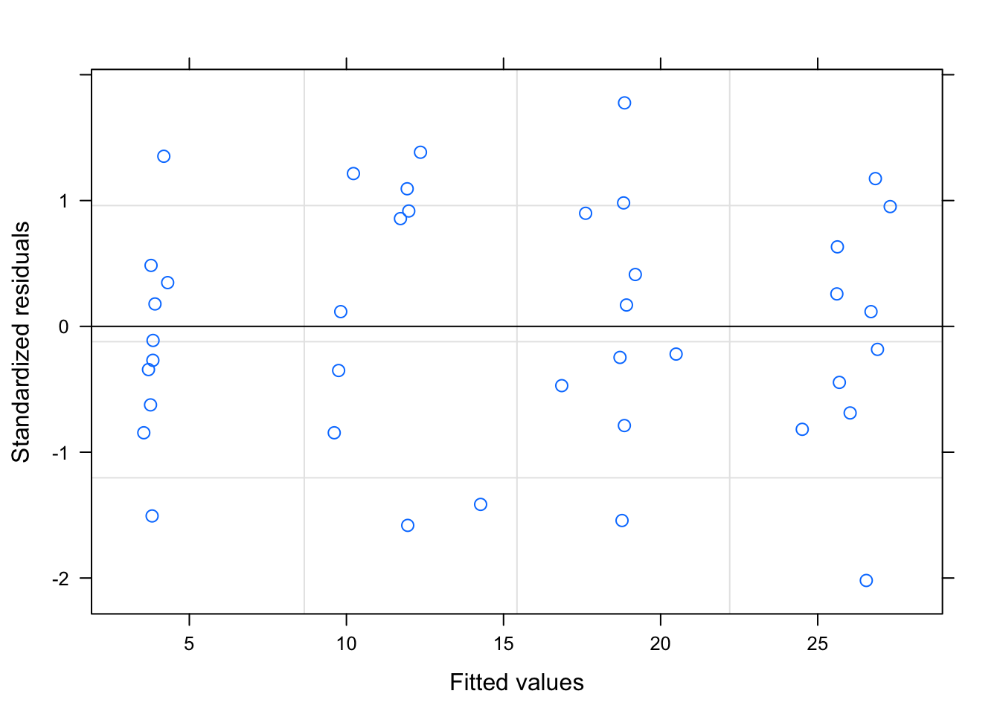
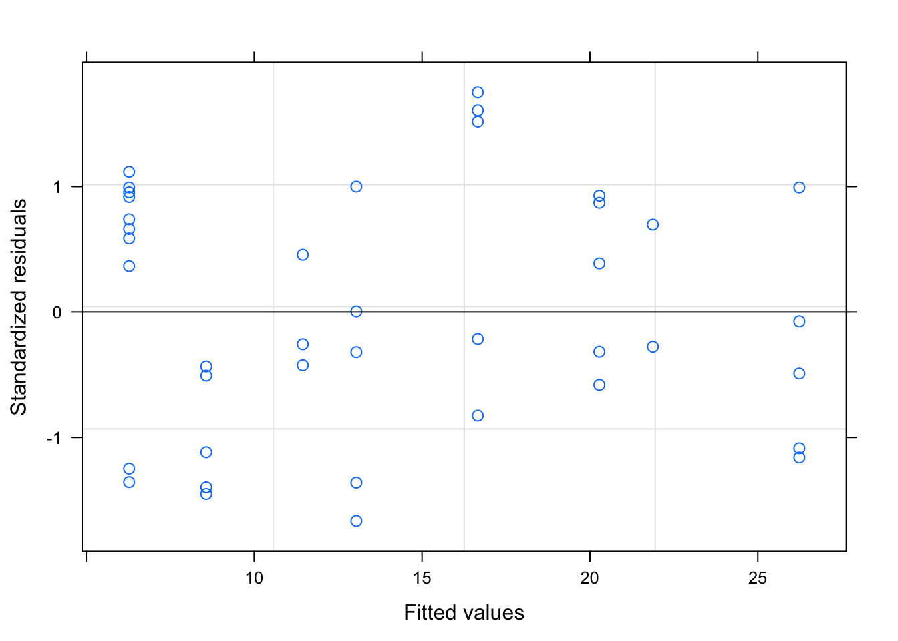

Chapter 3 A tutorial for using the lme function from the nlme package.
Author: Melissa Horger
3.1 The nlme package
nlme is a package for fitting and comparing linear and nonlinear mixed effects models.
It let’s you specify variance-covariance structures for the residuals and is well suited for repeated measure or longitudinal designs.
3.1.1 Similar packages
One similar package is lme4. It allows you to fit outcomes whose distribution is not Gaussian and crossed random effects. Some pros include that it stores data more effiently due to the use of sparse matrices and it works well with clustered data sets.
3.1.2 What’s included in nlme?
nlme contains sample data, statistical functions, matrices, and a lattice framework.
Examples of sample data
- MathAchSchool
- A dataset (160x7) that contains school-level demographic data such as student enrollment, academic progress, and SES.
library(nlme)
print(MathAchSchool[1:5,])## School Size Sector PRACAD DISCLIM HIMINTY MEANSES
## 1224 1224 842 Public 0.35 1.597 0 -0.428
## 1288 1288 1855 Public 0.27 0.174 0 0.128
## 1296 1296 1719 Public 0.32 -0.137 1 -0.420
## 1308 1308 716 Catholic 0.96 -0.622 0 0.534
## 1317 1317 455 Catholic 0.95 -1.694 1 0.351- BodyWeight
- A data set (176x4) describing the weight of rats over time while consuming different diets.
print(BodyWeight[1:5,])## Grouped Data: weight ~ Time | Rat
## weight Time Rat Diet
## 1 240 1 1 1
## 2 250 8 1 1
## 3 255 15 1 1
## 4 260 22 1 1
## 5 262 29 1 1- Earthquake
- A dataset (182x5) listing seismic measurements of 23 large earthquakes in western North America between 1940 and 1980
print(Earthquake[1:5,])## Grouped Data: accel ~ distance | Quake
## Quake Richter distance soil accel
## 132 20 5 7.5 1 0.264
## 133 20 5 8.8 1 0.263
## 134 20 5 8.9 1 0.230
## 135 20 5 9.4 1 0.147
## 136 20 5 9.7 1 0.286Examples of functions 1. anova.lme - This compares the likelihoods of fitted models. It will produce an AIC and BIC and can be used to compare null and predictive models or models with different predictors and/or interactions.
anova.lme(object, ..., test=TRUE,type = "sequential/marginal", adjustSigma, Terms, L, verbose)- corMatrix - A function to generate the correlation matrix of an object/dataset.
corMatrix(object, ...)- gapply - Applies a function to a distinct set of rows in a data frame. - To use this, the rows must first be identified using the “groups” function
gapply(object, which, FUN, form, level, groups, .)- lme - We will learn about this function extensively in the following sections
3.1.3 Using the nlme package
3.1.3.1 Begin by installing the nlme package
Found on the CRAN repository
Website: https://svn.r-project.org/R-packages/trunk/nlme
install.packages("nlme")3.1.3.2 Load the package (and other relevant packages)
library(ggplot2)
library(nlme)
library(dplyr)
library(knitr)3.2 The lme function
This generic function fits a linear mixed-effects model in the formulation described in Laird and Ware (1982) but allowing for nested random effects. The within-group errors are allowed to be correlated and/or have unequal variances.
3.2.1 Some important considerations
Need repeated measures from a single subject The data may be longitudinal, but they also may not.
Can account for correlations within individuals within the random effects
Uses maximum likelihood estimates
3.2.2 The arguments for this function
lme(model, data, fixed, random, groups, start, correlation, weights, subset, method, na.action, naPattern, control, verbose)
3.3 An example: Does the number of daily naps impact infant performance on a thing?
#creating a data set
Subs <- rep(c(seq(1:10)), 4)
Month <- c(rep(c(1), 10), rep(c(5), 10), rep(c(10), 10), rep(c(15), 10))
Naps <- c(rep(c(3), 10), 2, 3, 2, 1, 2, 3, 2, 3, 2, 3, 2, 2, 2 ,2, 3, 3, 2, 2, 1, 2, 3, 1, 2, 2, 1, 1, 2, 1, 2, 1 )
Napsfactor <- as.factor(Naps)
#Let's assume that infants' performance will get better with time. I altered the possible sampling distributions to reflect this.
scores <- c(runif(10, 1, 7), runif(10, 8, 15), runif(10, 16, 22), runif(10, 23, 30))
dataset <- data.frame(Subs, Month, Naps, scores, Napsfactor)
#save(dataset,file="horger.RData")load("data/horger.RData")
#Data should be set up in long format and look similar to this.
print(dataset)## Subs Month Naps scores Napsfactor
## 1 1 1 3 1.204228 3
## 2 2 1 3 4.215435 3
## 3 3 1 3 6.530265 3
## 4 4 1 3 3.651179 3
## 5 5 1 3 2.085147 3
## 6 6 1 3 4.913243 3
## 7 7 1 3 2.683738 3
## 8 8 1 3 3.372563 3
## 9 9 1 3 4.621265 3
## 10 10 1 3 3.105155 3
## 11 1 5 2 13.572888 2
## 12 2 5 3 10.021787 3
## 13 3 5 2 14.754621 2
## 14 4 5 1 11.818922 1
## 15 5 5 2 13.203504 2
## 16 6 5 3 12.327272 3
## 17 7 5 2 13.829133 2
## 18 8 5 3 9.144146 3
## 19 9 5 2 9.209897 2
## 20 10 5 3 8.146771 3
## 21 1 10 2 20.521925 2
## 22 2 10 2 19.207385 2
## 23 3 10 2 19.908420 2
## 24 4 10 2 21.929604 2
## 25 5 10 3 16.036066 3
## 26 6 10 3 19.170270 3
## 27 7 10 2 16.097766 2
## 28 8 10 2 17.480285 2
## 29 9 10 1 20.111028 1
## 30 10 10 2 18.278805 2
## 31 1 15 3 23.089659 3
## 32 2 15 1 26.585482 1
## 33 3 15 2 24.839186 2
## 34 4 15 2 24.917255 2
## 35 5 15 1 23.046358 1
## 36 6 15 1 28.955977 1
## 37 7 15 2 26.056173 2
## 38 8 15 1 28.870685 1
## 39 9 15 2 26.720957 2
## 40 10 15 1 26.898722 13.3.1 The experimental design.
This is a 4x3 within subject design. Infants are assessed at 4 time points - 1 month, 5 months, 10 months, and 15 months. There are 3 levels of napping - 1, 2, or 3 naps per day.
3.3.2 Data analysis
We will run a conditional growth model because we are including predictors. Subsequent fixed and random effects are now “conditioned on” the predictors (age and number of naps).
#Conditional growth model
tutorial<-lme(scores ~ Month * Naps, random = ~ Month | Subs, data=dataset)
#Because we are using a random sample, may need to rerun the scores several times for this piece of code to run effectivelylme(model, random, data)
model - scores ~ Month * Naps
We expect scores will be influenced by how old infants are (Month) and the number of Naps they take per day. There may be an interaction between these predictors.
random - random = ~ Month | Subs
Random error comes from the fact that this is a within subjects design. The same infants are assessed at 1 month, 5 months, 10 months, and 15 months.
data - data=dataset
Using the data set we created previously.
3.3.3 Displaying our results
tutorial## Linear mixed-effects model fit by REML
## Data: dataset
## Log-restricted-likelihood: -81.67538
## Fixed: scores ~ Month * Naps
## (Intercept) Month Naps Month:Naps
## 10.8206754 1.1464573 -2.8094967 0.1105195
##
## Random effects:
## Formula: ~Month | Subs
## Structure: General positive-definite, Log-Cholesky parametrization
## StdDev Corr
## (Intercept) 4.728576e-01 (Intr)
## Month 1.238514e-05 0
## Residual 1.732905e+00
##
## Number of Observations: 40
## Number of Groups: 10We can move the results to a nicer table using the summary function
#summarize an lme object - our solution
tut <- summary(tutorial)
tabl = tut$tTable
tabl ## Value Std.Error DF t-value p-value
## (Intercept) 10.8206754 2.59927655 27 4.162957 2.872090e-04
## Month 1.1464573 0.21022323 27 5.453523 9.028044e-06
## Naps -2.8094967 0.92823701 27 -3.026702 5.381092e-03
## Month:Naps 0.1105195 0.08248428 27 1.339886 1.914511e-01From this analysis, we would conclude that there is a main effect of age, infants performance improved with age, but there is no effect of number of naps. It was trending in the correct direction as the only negative slope.
3.3.4 Graphing our results
library(ggplot2)
plot<- ggplot(dataset, aes(x=Month, y=scores, color=Napsfactor, shape = Napsfactor, group = Subs), xlim(1, 15), ylim(0, 25), xlab(Month) ) +
geom_point()+
geom_line(color="grey")
plot + scale_x_continuous(name="Age (in months)", limits=c(1, 15), breaks =c(1,5,10,15)) +
scale_y_continuous(name="Scores", limits=c(0, 30))
This kind of graph allows us to see the developmental trajectory of individual infants. It highlights the fact that there are 2 developmental trends occuring here- Infants’ performance on the assessment is improving with time and the average number of naps they take is decreasing with time.
3.4 Continuing our example: Single main effect versus two main effects or an interaction
When making the original data set, I intentionally biased the data to show a developmental curve by increasing the sampling distribution for each age range. I could do something similar to bias our data to support the impact of taking fewer naps
#Create a new data set
Subs <- rep(c(seq(1:10)), 4)
Month <- c(rep(c(1), 10), rep(c(5), 10), rep(c(10), 10), rep(c(15), 10))
Naps <- c(rep(c(3), 10), 3, 3, 3, 3, 3, 2, 2, 2, 2, 2, 3, 3, 3 ,2,2, 2, 2,2,1, 1, 2, 2, 2, 2, 2, 1, 1, 1, 1, 1)
Napsfactor <- as.factor(Naps)
secondscores <- c(runif(10, 1, 10), runif(5, 5, 10),runif(5, 9, 17), runif(3, 10, 15), runif(5, 14, 22), runif(2, 20, 25), runif(5, 18, 23), runif(4,22, 27), runif(1, 27, 30) )seconddataset <- data.frame(Subs, Month, Naps, secondscores, Napsfactor)
#save(seconddataset, file="horger2.RData")load("data/horger2.Rdata")
print(seconddataset)## Subs Month Naps secondscores Napsfactor
## 1 1 1 3 7.621794 3
## 2 2 1 3 7.794263 3
## 3 3 1 3 3.168637 3
## 4 4 1 3 3.415735 3
## 5 5 1 3 8.465790 3
## 6 6 1 3 7.971604 3
## 7 7 1 3 8.553510 3
## 8 8 1 3 7.115589 3
## 9 9 1 3 8.379775 3
## 10 10 1 3 8.840234 3
## 11 1 5 3 7.416176 3
## 12 2 5 3 7.583637 3
## 13 3 5 3 5.250097 3
## 14 4 5 3 6.014483 3
## 15 5 5 3 5.372417 3
## 16 6 5 2 9.927262 2
## 17 7 5 2 12.315161 2
## 18 8 5 2 13.054388 2
## 19 9 5 2 15.337895 2
## 20 10 5 2 9.226133 2
## 21 1 10 3 10.863713 3
## 22 2 10 3 12.495100 3
## 23 3 10 3 10.480098 3
## 24 4 10 2 20.347891 2
## 25 5 10 2 16.173209 2
## 26 6 10 2 20.144221 2
## 27 7 10 2 14.771556 2
## 28 8 10 2 20.676701 2
## 29 9 10 1 23.473947 1
## 30 10 10 1 21.244746 1
## 31 1 15 2 22.276560 2
## 32 2 15 2 21.167274 2
## 33 3 15 2 22.405964 2
## 34 4 15 2 19.556372 2
## 35 5 15 2 18.950262 2
## 36 6 15 1 25.115982 1
## 37 7 15 1 23.578970 1
## 38 8 15 1 23.747330 1
## 39 9 15 1 26.066104 1
## 40 10 15 1 28.513882 13.4.1 Did the manipulation work?
#Summary stats from our first dataset
demos <- dataset %>%
group_by(Month, Naps) %>%
summarise(mean_score = mean(scores, na.rm=TRUE))
#Summary stats from our second dataset
seconddemos <- seconddataset %>%
group_by(Month, Naps) %>%
summarise(mean_secondscore = mean(secondscores, na.rm=TRUE))
print(demos)## # A tibble: 10 x 3
## # Groups: Month [4]
## Month Naps mean_score
## <dbl> <dbl> <dbl>
## 1 1 3 3.64
## 2 5 1 11.8
## 3 5 2 12.9
## 4 5 3 9.91
## 5 10 1 20.1
## 6 10 2 19.1
## 7 10 3 17.6
## 8 15 1 26.9
## 9 15 2 25.6
## 10 15 3 23.1print(seconddemos)## # A tibble: 8 x 3
## # Groups: Month [4]
## Month Naps mean_secondscore
## <dbl> <dbl> <dbl>
## 1 1 3 7.13
## 2 5 2 12.0
## 3 5 3 6.33
## 4 10 1 22.4
## 5 10 2 18.4
## 6 10 3 11.3
## 7 15 1 25.4
## 8 15 2 20.9It may or may not because we’re still drawing a random sample, but the trend should be clearer than during the first example.
###Now run the analysis again
#Run the analysis again
secondtutorial <- lme(secondscores ~ Month * Naps, random = ~ Month | Subs, data=seconddataset)
secondtutorial## Linear mixed-effects model fit by REML
## Data: seconddataset
## Log-restricted-likelihood: -90.36513
## Fixed: secondscores ~ Month * Naps
## (Intercept) Month Naps Month:Naps
## 16.8803891 1.0208719 -3.7260738 -0.1487096
##
## Random effects:
## Formula: ~Month | Subs
## Structure: General positive-definite, Log-Cholesky parametrization
## StdDev Corr
## (Intercept) 1.694427e-04 (Intr)
## Month 2.301061e-15 0
## Residual 2.291816e+00
##
## Number of Observations: 40
## Number of Groups: 10#Create a table
secondtut<- summary(secondtutorial)
secondtabl = secondtut$tTable
secondtabl ## Value Std.Error DF t-value p-value
## (Intercept) 16.8803891 4.0453977 27 4.172739 0.0002798284
## Month 1.0208719 0.3172138 27 3.218246 0.0033430373
## Naps -3.7260738 1.4256854 27 -2.613531 0.0144718579
## Month:Naps -0.1487096 0.1227206 27 -1.211774 0.2360974216#Graph the results
secondplot<-
ggplot2::ggplot(seconddataset, aes(x=Month, y=secondscores, color=Napsfactor, shape = Napsfactor, group=Subs), xlim(1, 15), ylim(0, 25), xlab(Month) ) +
geom_point()+
geom_line( color="grey")
secondplot + scale_x_continuous(name="Age (in months)", limits=c(1, 15), breaks = Month) +
scale_y_continuous(name="Scores", limits=c(0, 30))
3.5 Plot the residuals
We can check the residuals to judge the fit of our models. The second tutorial should fit better because we set the data up that way.
plot(tutorial)
plot(secondtutorial)
Remember, for a well fitting regression, we want the plot of our residuals to meet the following criteria: (1) they’re pretty symmetrically distributed (2) they’re relatively small and (3) they don’t follow a clear pattern
The second plot seems to meet these qualifications.
3.6 Writing up our results
summary(secondtutorial)## Linear mixed-effects model fit by REML
## Data: seconddataset
## AIC BIC logLik
## 196.7303 209.3984 -90.36513
##
## Random effects:
## Formula: ~Month | Subs
## Structure: General positive-definite, Log-Cholesky parametrization
## StdDev Corr
## (Intercept) 1.694427e-04 (Intr)
## Month 2.301061e-15 0
## Residual 2.291816e+00
##
## Fixed effects: secondscores ~ Month * Naps
## Value Std.Error DF t-value p-value
## (Intercept) 16.880389 4.045398 27 4.172739 0.0003
## Month 1.020872 0.317214 27 3.218246 0.0033
## Naps -3.726074 1.425685 27 -2.613531 0.0145
## Month:Naps -0.148710 0.122721 27 -1.211774 0.2361
## Correlation:
## (Intr) Month Naps
## Month -0.935
## Naps -0.985 0.936
## Month:Naps 0.818 -0.947 -0.861
##
## Standardized Within-Group Residuals:
## Min Q1 Med Q3 Max
## -1.6665261 -0.6414693 -0.1440354 0.8827551 1.7514202
##
## Number of Observations: 40
## Number of Groups: 10A linear mixed effects model and conditional growth curve analysis was used to analyze infants’ scores at 1, 5, 10, and 15 months old. Their scores were modeled with fixed effects of Month and Naps (1, 2, or 3) and random error to account for the within subjects design.There was a significant effect of Month- scores increased with age (Estimate= , SE= , p= ).
#Estimate =
secondtabl[2,1]## [1] 1.020872#SE =
secondtabl[2,2]## [1] 0.3172138#p =
secondtabl[2,5]## [1] 0.003343037There was also a significant effect of Naps with fewer naps associated with better scores over time (Estimate= , SE= , p= ).
#Estimate =
secondtabl[3,1]## [1] -3.726074#SE =
secondtabl[3,2]## [1] 1.425685#p =
secondtabl[3,5]## [1] 0.01447186The interaction was not significant.